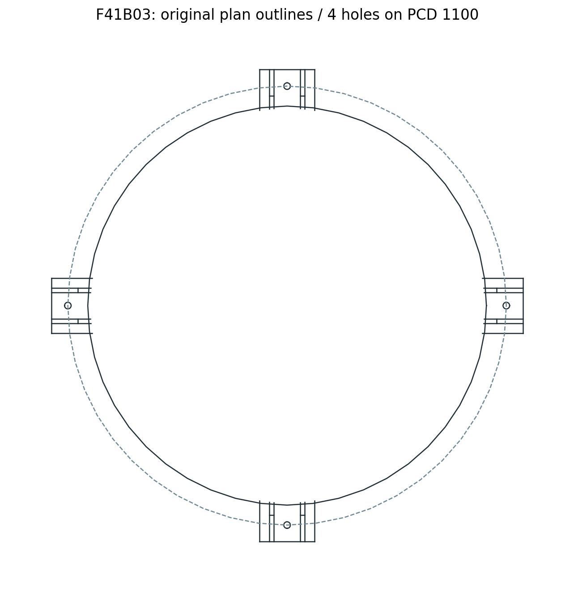
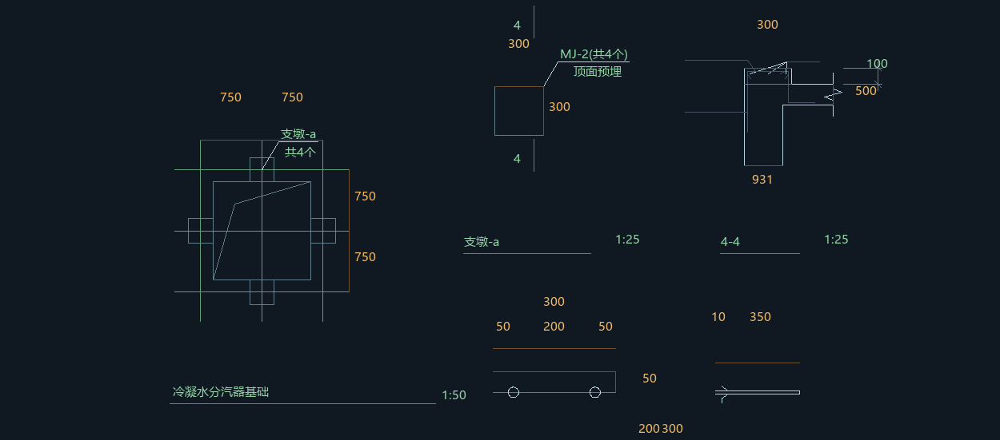
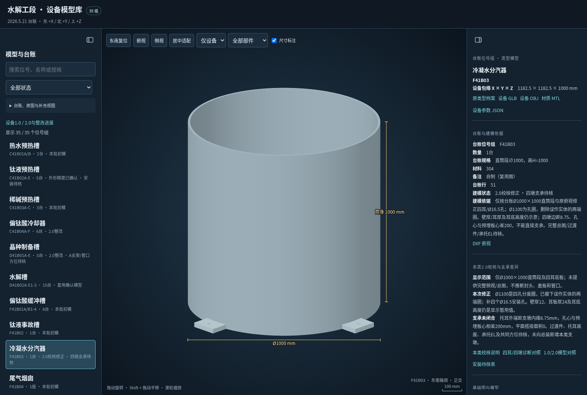
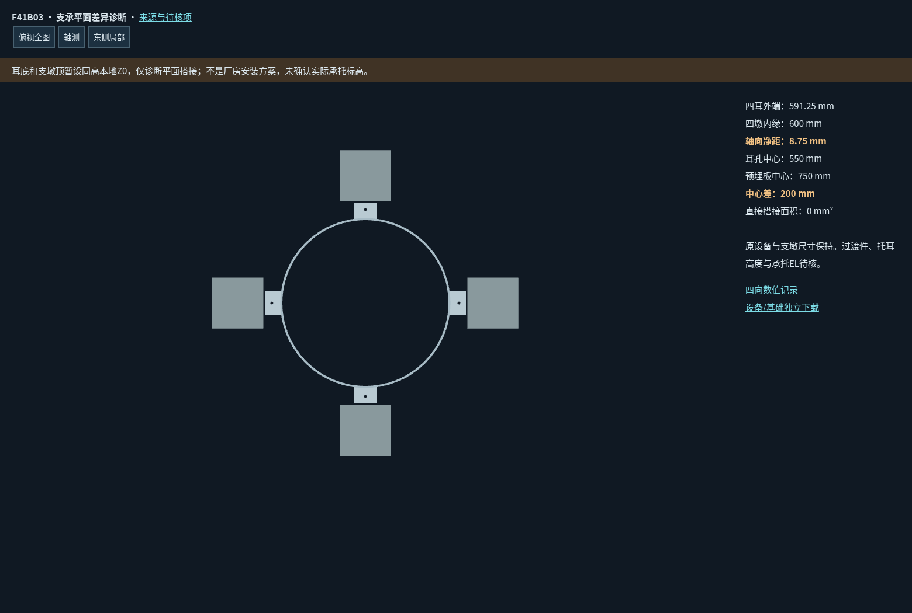
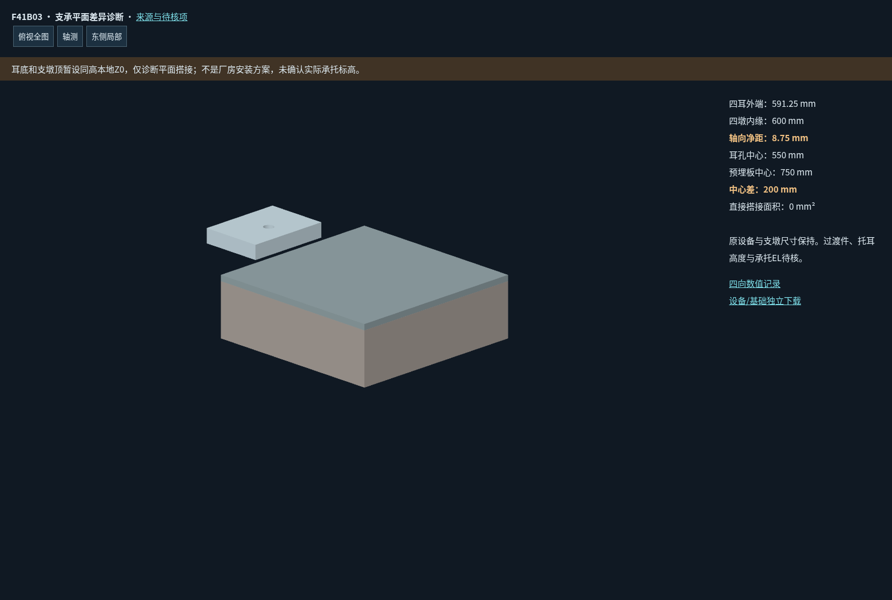

当前模型/独立基础 · 支承差异三维诊断 · 1.0/2.0对照 · 校验记录
仅直筒段模型；四耳与四墩无平面搭接，过渡件/托耳高度/承托EL及完整总图待核。
F41B03 · 冷凝水分汽器 · 2.0-F41B03-01 本批为证据范围内的表达修正与支承核对，并非完整设备总图重建。现有台账只明确直筒段Ø1000×1000，设备资料只有俯视；尚无整机侧视、封头、盖板和管口总图，不根据设备名称补造这些结构。 设备依据：2026.5.21台账水解页第51行、示图3623/3625/3626及3629—3632。3623是名义筒径Ø1000；3626位于中心线层，半径550，穿过四个安装孔，是孔位分度圆Ø1100，不是端部实体圈。原模型据它生成了上下两个Ø1104端圈，本次撤下，原直筒段几何保持。 四耳平面：底板外端半径591.25，内端约489.230485，切向宽137.5；4个孔Ø16.5、孔心半径550，四向90度均布。原实心底板改成真实开孔。俯视还有双筋投影，但缺立面高度，不自行生成立筋高度。原筒壁12、底板厚24及耳底Z0继续作为显示暂用值，不能写成图纸明示尺寸。 基础依据：《水解设备基础图》冷凝水分汽器基础与4-4/MJ-2详图。四支墩300×300，中心沿四轴±750（对边中心距1500），预埋板中心与支墩中心相同。原四支墩/预埋板模型几何逐字节保留，独立保存于本类2.0基础目录。露出段显示高100及板厚/全局高程的解释仍列待核；2B52尺寸文字已写“板厚”，不能把其残留图形数值500当成确认楼板厚。 支承差异：四个方向耳板外端591.25，而支墩内缘600，轴向净距8.75mm；耳孔中心550与预埋板中心750径向相差200mm；平面搭接面积为0。耳板最外角半径约595.234，小于支墩最内600，所以仅旋转也不能形成直接接触。不拉长托耳、不移动支墩、不凭空加过渡板来制造“已贴合”。过渡件形式/尺寸、托耳高度与实际承托EL必须另核。 安装：布置图D9737圆心对应本地X40000/Y41750，旁注D973A为POSEL112.200。当前仍保留原暂用Z12200、零旋转；该POS究竟指筒段下端还是承托面尚不明确，四耳共同方位和管口方向也未确认。当前总装仅替换设备表达，不增加本类四支墩实例，不认定承托链闭合。 对照功能：设备和四支墩可各自独立查看/下载；另提供“支承差异诊断”三维页。诊断页把耳底与墩顶临时设为同高本地Z0，只为检查平面搭接，不是厂房安装方案、没有改变总装就位表。可切换俯视、轴测和东侧局部查看8.75mm净距；孔心与埋件中心200mm差异同时记录。1.0/2.0页保留原端圈与修正后模型对照。 1.0、所有原始图、原四墩及其他设备/建筑/桥架保持。缺完整总图、过渡件及承托EL的限制在参数、安装表和界面明确标示。模型校核针对当前暂用位置，不替代安装确认；不检查检修空间。
设备俯视原图

四墩基础原图

当前直筒段与开孔底板

同高平面诊断，非安装方案

东侧局部净距
